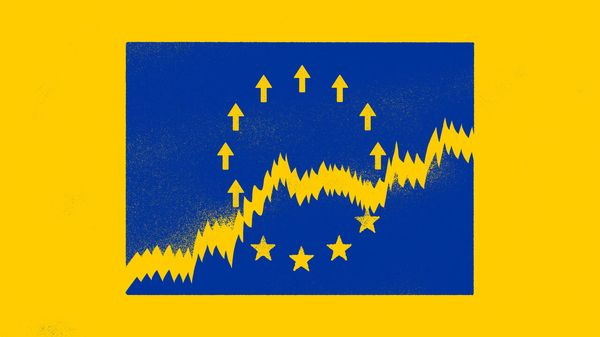

Jul 09, 2026 05:23 AM

“The stock MARKET is not the economy” might be a cliché, but it is still jarring to see quite how far the two can part ways. Surely economic growth should be good for shareholders? Yet study after study has suggested the opposite. One by Jay Ritter of the University of Florida, for instance, compared the returns on 16 countries’ stock markets with their GDP growth per person between 1900 and 2002. The two appeared, if anything, to be negatively correlated—meaning that the faster a country became richer, the worse its investors tended to do.
Mr Ritter’s results are worth bearing in mind when contemplating some of the world’s most underloved shares. Brief flirtations aside, it has been a long time since Europe’s big markets have thrilled international investors, and there are no prizes for guessing why. The IMF reckons GDP growth in the euro area will be just 1.1% this year, compared with 1.8% for advanced economies the world over and 2.3% for America. Some of Europe’s peripheral and emerging bourses are buzzing; the mainstays are not.
Worse, Europe appears increasingly ill-equipped for the 21st century. It has neither artificial-intelligence giants to compete with those in America and China nor enough data centres to host their models. Its electricity grid is strained even without them. So is its power supply, since Europeans import nearly 60% of their energy—a vulnerability laid bare by wars in Ukraine and Iran.
In spite of all this, European shares deserve a lot more affection than they are getting. More than anywhere else in the world, the old continent’s stock markets are not its economy. Even as GDP growth languishes, their fundamentals look surprisingly good.
For a case study, consider what happened after the Iran war closed the Strait of Hormuz. Until then, one European equity strategist says, she had spent much of her time fielding calls from international investors who worried they were overexposed to America and wanted to diversify. Capital was flowing into European equity funds more quickly than it had been for some time. When the bombs began to fall, the phone calls stopped and the capital flows all but dried up. Share prices tanked pretty much everywhere, but those of European firms then recovered far slower than American ones. It was only last month, when Hormuz tentatively reopened, that European shares began to catch up.
The irony is that the strait’s closure probably boosted Europe’s corporate profits, even as it threatened the continent’s economy—and may do so again as the war resumes. Morgan Stanley finds that 20% of the earnings underlying the MSCI Europe share index come from firms that would have benefited from the spike in commodity prices, such as energy and chemicals producers. The investment bank also estimates that only 10% of European earnings (from car- and foodmakers, for example) would have been harmed by the supply-chain disruption. Investors nevertheless see the war as a cue to shun European stocks en masse.
Europe’s sclerotic growth, similarly, need not condemn its firms’ bottom lines. Taken in aggregate, over half their revenue comes from outside Europe’s developed economies; weighted by firms’ market value (as share indices tend to be) this rises to 60%. No other similarly sized region has stock markets that are so exposed to countries beyond its borders. Investors in European share indices are betting more on the rest of the world than they are on Europe.
Even the burst of inflation brought on by the Iran war should be no bad thing for European shares. Around 40% of them by market value represent firms that derive earnings from real assets, from commodities and machinery to the semiconductors that power AI. Such assets tend to perform well when consumer prices are rising. Another 20% or so of Europe’s stock market is made up of banking shares, which also do well when prices (and hence interest rates and lending margins) are on the way up.
Equity analysts, therefore, are feeling more and more bullish about Europe’s corporate profits, estimating that earnings per share will grow by 17% in 2026. This is admittedly only two-thirds of the growth pencilled in for American stocks, but well above the 9% consensus of two years ago. After a quiet few months European strategists might soon find their phones ringing again. If they do, it may be an idea to remind the investor on the other end that Europe’s stock market is nothing like its economy. ■
Subscribers to The Economist can sign up to our Opinion newsletter, which brings together the best of our leaders, columns, guest essays and reader correspondence.